Deep Clustering
深度聚类
🎯研究图神经网络的聚类问题，利用图神经网络强大的结构捕获能力来提升聚类算法的效果。
1. 聚类问题简介
聚类是针对给定的样本，依据它们的特征的相似度或距离，将其归并到若干“类”或“簇”中。其目的是通过得到的类或簇来发现数据的特点或对数据进行处理。聚类作为经典的无监督学习算法，在数据挖掘/机器学习等领域有着广泛地应用。
两种最常用的聚类算法：层次聚类和 K 均值聚类。
- 层次聚类：将每个样本各自分到一个类；之后将相聚最近的两类合并，建立一个新的类，重复此操作直到满足停止条件；得到层次化类别结构。
- K-Means 聚类：选择 K 个类别的中心，将样本逐个指派到与其最近的中心的类中，得到一个聚类结果；然后更新每个类的样本的均值，作为类的新的中心；重复以上步骤，直到收敛为止。
K-Means 被选为数据挖掘十大经典算法之一。
图神经网络已经成为深度学习领域最热门的方向之一，那么，如何利用图神经网络强大的结构捕获能力来提升聚类算法的精度呢？深度聚类是聚类方法的一种，它采用深度神经网络来学习聚类友好表征。
2. 相关综述
综述文献：[1][2]
深度聚类算法（Deep Clustering Algorithm）可以分解为三个基本组成部分：
- 深度神经网络
- 网络损失 $L_n$
- 聚类损失 $L_c$
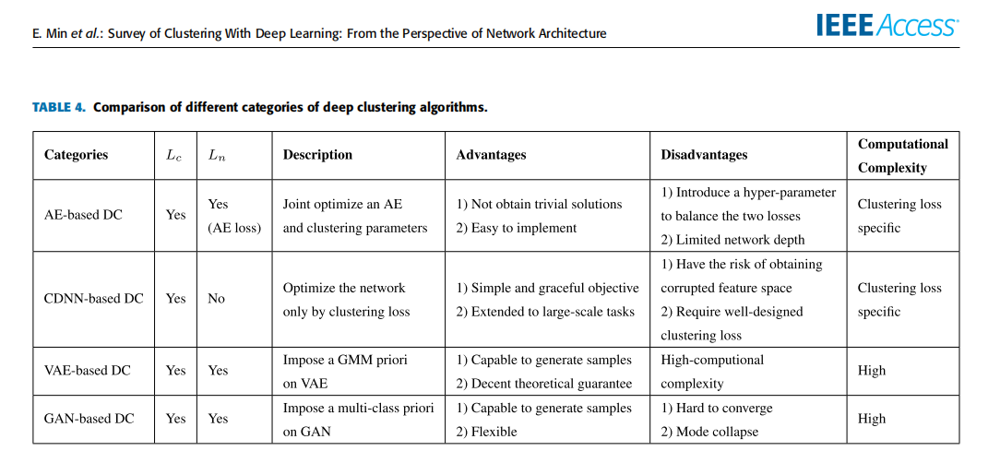
3. 论文精读
论文名称：Attributed Graph Clustering: A Deep Attentional Embedding Approach [3]
发表期刊：International Joint Conference on Artificial Intelligence (IJCAI-19)
论文地址：https://arxiv.org/abs/1906.06532
摘要
最近的研究大多集中在使用深度学习方法来学习一个紧凑的图形嵌入（embedding），在此基础上应用经典的聚类方法（如 K-means）来完成聚类任务。这种两阶段的方法通常无法取得更好的结果，因为其图嵌入不是以目标为导向的，即此深度学习方法并不是为聚类任务而设计的。
本篇论文提出一种以目标为导向的深度学习方法：Deep Attentional Embedded Graph Clustering (DAEGC)。这种方法包含三个主要核心点：
（1）注意力机制的图自编码器（Graph Attentional Autoencoder）
（2）自训练的图聚类（Self-optimizing Embedding）
（3）自训练过程与图嵌入共同学习和优化（Joint Embedding and Clustering Optimization）
DAEGC 在 Cora、Citeseer、Pubmed 数据集上都取得了最好的聚类结果。
Introduction
对于图聚类问题，其中的关键是如何捕捉结构关系和节点内容信息。很多近期的研究通过深度学习方法学习到节点的 Embedding，再利用简单的聚类算法（如 K-Means）进行聚类。
很显然，这是一种两个阶段的方法（非目标为导向），其存在着如下的缺点：学习到的 Embedding 可能不是最适合随后的图聚类任务，并且图聚类任务对图的嵌入学习没有帮助。
传统的以目标为导向的方法大多针对的是分类任务（监督学习，如图卷积实现分类）。
本论文提出了一种以目标为导向的图注意力自动编码器的图聚类框架。Figure 1 显示了其与两阶段方法的不同，模型学习嵌入并同时在一个统一的框架内进行聚类，从而获得更好的聚类性能。
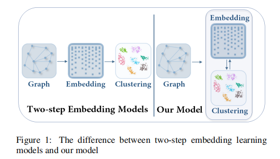
Model
如 Figure 2 所示模型主要由两个模块构成：
（1）Graph attentional autoencoder
自动编码器将节点属性值和图结构作为输入，并通过最小化重建损失来学习潜在的嵌入。
（2）Self-training clustering
自训练模块根据学习到的表征进行聚类，反过来，根据当前的聚类结果来操作潜在的表征。
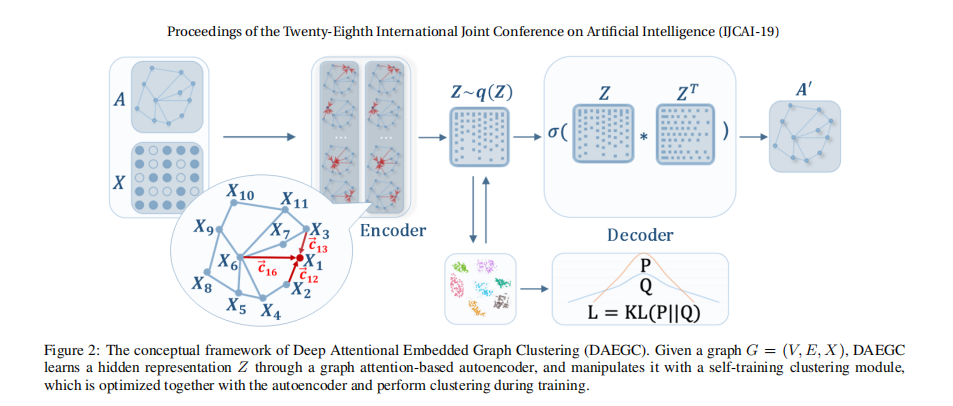
在一个统一的框架内学习图的嵌入和聚类，这样每个部分都能使对方受益。接下来对模型的细节进行分析。
（1）Graph Attentional Autoencoder
Graph Attention Encoder
使用一个图注意力网络（GAT）的变体作为 Graph Encoder，其核心是通过关注其邻居来学习每个节点的隐藏表征，将节点特征与潜在表征中的图结构相结合。注意力机制对邻居的表示给予不同的权重。
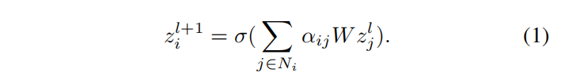
- $z^{l+1}_{i}$：节点 $i$ 的输出表征（新特征）；
- $N_i$：节点 $i$ 的所有邻居节点；
- $\alpha_{ij}$：注意力系数，衡量节点 $j$ 对节点 $i$ 的重要程度；
- $\sigma$：非线性激活函数。
注意力系数 $\alpha_{ij}$ 可以表示为一个单层前馈神经网络，$x_i$ 和 $x_j$ 表示节点 $i$ 和 $j$ 的特征向量。
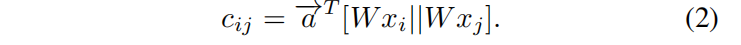
- $c_{ij}$ 是一个标量，衡量节点 $j$ 对节点 $i$ 的重要程度。
图注意网络（GAT）只考虑了一阶邻居， 由于图具有复杂的结构关系，本篇论文的编码器中利用高阶邻居，通过考虑图中的 t 阶邻居节点来获得一个接近矩阵：
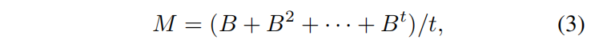
- $B$ 是一个转移矩阵（非负，各行元素之和等于 1），如果节点 $i$ 和 $j$ 之间存在边，则 $B_{ij} = 1/d_i$，否则 $B_{ij} = 0$。$d_{i}$ 为节点 $i$ 的度；
- $M_{ij}$ 表示节点 $i$ 和节点 $j$ 之间的拓扑相关性（$t$ 阶邻居）；
- $N_i$ 指 $M$ 中 $i$ 的邻居节点，如果 $M_{ij} > 0$，则表示 $j$ 是 $i$ 的邻居节点；
- $t$：可以针对不同的数据集灵活地选择t，以平衡模型的精度和效率。
注意力系数通常在所有邻域 $j∈N_i$ 中用一个 softmax 函数进行归一化，以使它们易于在各节点间进行比较。
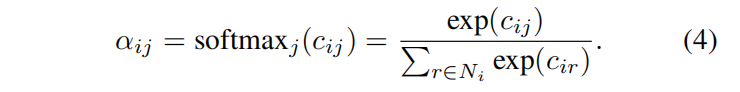
加上拓扑权重 M 和激活函数 δ（LeakyReLU），注意力系数可以表示为：
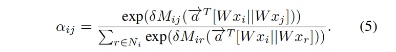
$x_i = z^{0}_{i}$ 作为输入，堆叠两个图注意力层：
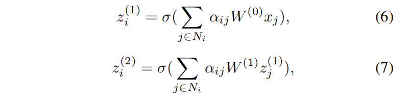
图注意力编码器将结构和节点特征编码成一个隐藏的表示，得到：$z_i = z^{(2)}_{i}$。
Inner Product Decoder
解码器（Decoder）可以进行如下分类：重建图结构、重建节点特征属性、两种都重建。由于公式（7）获取到的潜伏嵌入（latent embedding）已经包含了内容和结构信息，因此本篇论文选择采用一个简单的内积解码器来预测节点之间的联系：
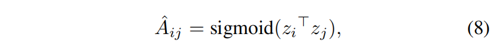
重建损失 Reconstruction Loss
通过衡量 $A$ 和 $\hat{A}$ 之间的差异性来最小化重构损失：
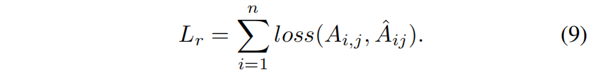
（2）Self-optimizing Embedding
图聚类任务是无监督的，因此在训练期间无法获得关于所学嵌入是否得到很好优化的反馈。即 GAE 所学习到的节点表示只是为了更好的重构网络结构，和聚类并没有直接联系。针对此问题，本篇论文提出了 一种自优化的嵌入算法作为解决方案，对 GAE 所学习到的 embedding 进行约束和整合，使其更适合于聚类任务。
除了优化重建误差，还将隐藏嵌入（hidden embedding）输入到一个自优化的聚类模块中，该模块最小化了以下目标：
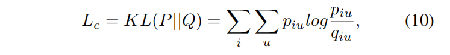
- $q_{iu}$ ：衡量节点的 embedding $z_{i}$ 和聚类中心 embedding $\mu_u$ 的相似度
使用学生分布（Student’s $t$-distribution）来衡量，以处理不同规模的集群。（11）式中，聚类中心 embedding 为 $\mu_u$，则节点 $i$ 属于某个类别的概率为 $q_{i u}$:
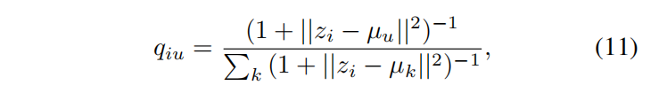
T 分布：用于根据小样本来估计呈正态分布且方差未知的总体的均值。
$q_{i u}$ 可以被看作是每个节点的软聚类分配分布。为了引入聚类信息来实现聚类导向的节点表示，我们需要迫使每个节点与相应的聚类中心更近一些，以实现所谓的类内距离最小，类间距离最大（二次方后，分布会变得更加尖锐，也更置信）。定义目标分布 $p_{iu}$ ：
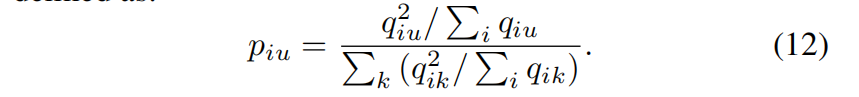
- 类别 $k$
目标分布 P 将 Q 提高到二次方，以强调这些“自信的分配”的作用。然后，聚类损失迫使当前分布 Q 接近目标分布 P，以便将这些“有信心的分配”设置为软标签（“works as ground-truth labels”），监督 Q 的嵌入学习。
将聚类损失降到最低，以帮助自动编码器利用嵌入物自身的特性操纵嵌入空间。
（3）Joint Embedding and Clustering Optimization
共同优化自动编码器嵌入和聚类学习，总目标函数定义为：
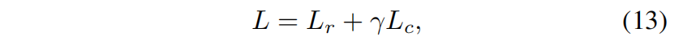
-
$L_r$：Reconstruction loss
-
$L_c$：Clustering loss
-
$\gamma >= 0$：控制两者的平衡
可以直接从最后一个优化的 Q 中获得聚类结果，即对节点 $i$ 的所处的簇为：
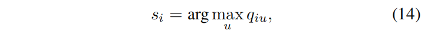
Deep Attentional Embedded Graph Clustering Algorithm
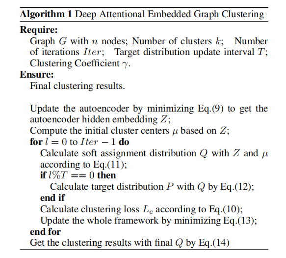
Experiments
三个数据集
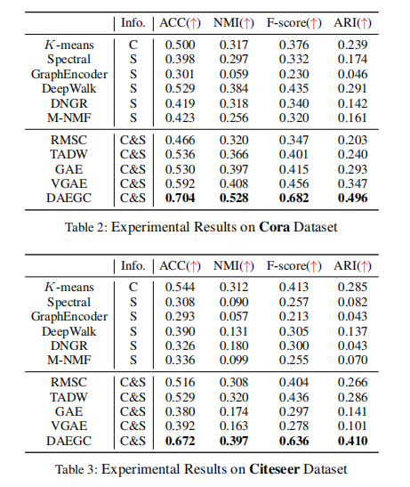
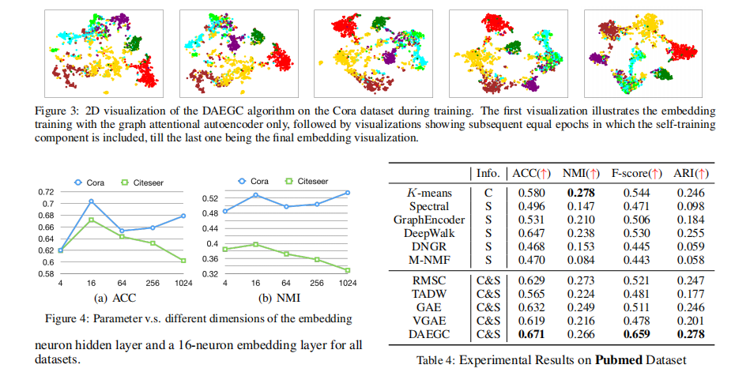
总结
- DAEGC: an unsupervised deep attentional embedding algorithm;
- 在一个统一的框架内，联合进行图聚类和学习图嵌入；
- 学习到的图嵌入整合了结构和内容信息，并专门用于聚类任务；
- 针对聚类这个无监督学习任务，提出了一个自训练的聚类组件，从“置信”的分配中生成软标签，以监督嵌入的更新；
- 聚类损失和自动编码器重建损失被联合优化，以同时获得图嵌入和图聚类的结果；
- 将实验结果与各种最先进的算法进行比较，验证了 DAEGC 的图聚类性能。
References
[1] Aljalbout, E., Golkov, V., Siddiqui, Y., & Cremers, D. (2018). Clustering with Deep Learning: Taxonomy and New Methods. ArXiv, abs/1801.07648.
[2] Erxue Min, Xifeng Guo, Qiang Liu, Gen Zhang, Jianjing Cui, and Jun Long. A Survey of Clustering with Deep Learning: From the Perspective of Network Architecture. DOI: 10.1109/ACCESS.2018.2855437, IEEE Access, vol. 6, pp. 39501-39514, 2018.
[3] Wang, C., Pan, S., Hu, R., Long, G., Jiang, J., & Zhang, C. (2019). Attributed Graph Clustering: A Deep Attentional Embedding Approach. IJCAI.
[4] https://deepnotes.io/deep-clustering
Can deep neural networks learn to do clustering? Introduction, survey and discussion of recent works on deep clustering algorithms.
[5] Papers List (1.2k Stars) https://github.com/zhoushengisnoob/DeepClustering
Deep Clustering: methods and implements
[6] 图神经网络时代的深度聚类：https://zhuanlan.zhihu.com/p/114452245